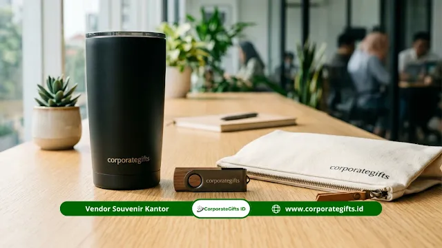

Corporate Gifts ID - Souvenir mitra sekolah swasta adalah cinderamata profesional berlogo institusi yang diberikan kepada pihak yang bekerja sama resmi dengan sekolah swasta, seperti sponsor, donor beasiswa, yayasan, instansi pemerintah, universitas rekanan, atau vendor operasional. Kehadirannya berfungsi sebagai wujud apresiasi formal, media penguat relasi kelembagaan, serta sarana membangun citra profesional institusi pendidikan di mata publik.
Pilihan item yang paling banyak diaplikasikan mencakup tumbler vacuum flask, tas jinjing kanvas eksklusif, buku catatan agenda kulit, pulpen metal grafir, power bank berkapasitas besar, hingga plakat penghargaan akrilik kayu. Pemilihan produk cinderamata yang tepat merefleksikan keseriusan komitmen dan nilai kolaborasi mutualisme jangka panjang antara sekolah swasta dan para mitra strategisnya.
Poin Kunci Souvenir Mitra Sekolah:
- Sasaran Hubungan: Ditujukan bagi lembaga atau entitas yang memiliki ikatan kerja sama formal dengan institusi sekolah swasta.
- Fungsi Strategis: Berperan sebagai instrumen branding kelembagaan, apresiasi formal, dan penguat relasi jangka panjang.
- Ragam Produk: Mencakup merchandise berlogo, alat tulis eksekutif, perangkat elektronik digital, dan tas cinderamata eksklusif.
- Kredibilitas Vendor: Pemilihan vendor berpengalaman sangat menentukan presisi kualitas cetak logo dan ketepatan jadwal acara.
- Perencanaan Matang: Alokasi anggaran, estimasi kuantitas unit, dan timeline produksi wajib dimatangkan minimal sebulan sebelum kegiatan.
Apa Itu Souvenir Mitra Sekolah Swasta?
Souvenir mitra sekolah swasta adalah produk cinderamata berstandar profesional yang dirancang khusus untuk mewakili jalinan kemitraan resmi sebuah institusi pendidikan swasta. Produk ini menjadi simbol nyata kehadiran dan apresiasi antar kedua belah pihak dalam berbagai momentum kolaboratif.
Paket cinderamata ini memiliki bobot nilai yang berbeda dengan bingkisan promosi siswa baru atau suvenir massal umum. Mengingat sifatnya yang formal dan profesional, produk yang diseleksi harus mampu merefleksikan nilai-nilai luhur kelembagaan sekolah serta menjaga citra prestisius yayasan pengelola.
Mitra sekolah swasta mencakup berbagai spektrum kerja sama, mulai dari perusahaan sponsor program tahunan, lembaga donor beasiswa, yayasan pendidikan mitra, jajaran instansi kedinasan, universitas rekanan luar dan dalam negeri, hingga mitra vendor pendukung operasional sekolah.
Siapa Saja yang Termasuk Mitra Sekolah Swasta?
Para pihak yang terikat dalam surat perjanjian kerja sama resmi (MoU) dengan sekolah swasta umumnya terbagi dalam empat klaster utama:
- Korporasi dan Perusahaan Swasta: Menyediakan fasilitas magang industri bagi siswa, kunjungan pabrik (industrial visit), pembicara tamu, atau rekrutmen kerja bagi alumni.
- Lembaga Filantropi & Donor Beasiswa: Memberikan dukungan finansial dan program pembinaan bagi siswa berprestasi maupun siswa dari latar belakang prasejahtera.
- Instansi Pemerintah & Dinas Pendidikan: Menjalin koordinasi terkait pengembangan kurikulum, akreditasi, uji kompetensi, dan kegiatan seremonial kenegaraan.
- Vendor & Rekanan Resmi: Menyediakan sarana teknologi, laboratorium, buku ajar, perlengkapan seragam, maupun fasilitas logistik penunjang sekolah.
Setiap klaster mitra menuntut pendekatan souvenir yang selaras dengan profil penerimanya. Mitra korporasi biasanya lebih mengapresiasi souvenir kantor elegan dan fungsional, sedangkan lembaga sosial atau komunitas pendidikan menyukai produk yang memiliki nilai guna harian serta sarat makna edukatif.
Mengapa Souvenir Penting dalam Kemitraan Sekolah Swasta?
Pemberian cinderamata bukanlah sekadar formalitas basa-basi administratif. Dalam ekosistem pendidikan modern yang kompetitif, cinderamata kemitraan mengemban tiga pilar fungsi strategis:
Penguatan Identitas Kelembagaan
Cinderamata yang menampilkan identitas logo sekolah, lambang yayasan, dan tata warna khas secara konsisten bertindak sebagai sarana pengingat visual yang kuat. Ketika barang tersebut digunakan di meja kerja pimpinan instansi rekanan, reputasi sekolah tetap hadir dalam kesadaran profesional mereka.
Ekspresi Apresiasi Profesional
Bingkisan yang dipilih dengan teliti menandakan bahwa pihak sekolah menaruh rasa hormat mendalam atas waktu, dana, dan kontribusi yang telah dicurahkan oleh mitra. Apresiasi yang tulus ini berbanding lurus dengan loyalitas dan kesediaan mitra untuk memperpanjang kontrak kerja sama di periode berikutnya.
Representasi Nilai Institusi
Kualitas fisik dari sebuah suvenir merefleksikan standar mutu operasional sekolah itu sendiri. Sekolah swasta unggulan yang konsisten menyajikan produk cinderamata berkualitas premium mengirimkan sinyal positif bahwa mereka menerapkan standar mutu yang tinggi dalam seluruh aspek pendidikan.
Dibandingkan media kertas promosi seperti brosur atau booklet yang kerap terselip dan terbuang, merchandise fungsional harian memiliki masa pakai bertahun-tahun, menjadikannya investasi diplomasi kelembagaan yang paling hemat biaya.

Kombinasi buku catatan agenda, pulpen metal grafir nama, dan flashdisk kartu untuk cinderamata kemitraan institusi pendidikan.
Apa Saja Jenis Souvenir yang Tepat untuk Mitra Sekolah Swasta?
Pilihan cinderamata yang ideal dikelompokkan menjadi tiga kategori utama berdasarkan fungsi dan kesan yang dihasilkan:
Souvenir Fungsional Sehari-hari
Kategori ini berorientasi pada kemudahan penggunaan dalam rutinitas kerja harian sehingga memberikan eksposur jenama yang berkelanjutan:
- Tumbler Stainless Berinsulasi: Praktis, tahan panas dan dingin hingga belasan jam, ramah lingkungan, serta menjadi media branding yang sangat prestisius.
- Tote Bag Kanvas Premium: Memiliki daya tampung luas, jahitan kokoh, dan sangat cocok dijadikan wadah paket berkas kemitraan.
- Buku Agenda Kulit & Planner: Sangat relevan dengan kultur kerja akademisi dan pimpinan korporat saat mencatat risalah pertemuan penting.
- Pulpen Metal Grafir: Menampilkan kesan klasik dan mewah, sangat tahan lama, serta dapat digrafir nama institusi mitra secara personal.
Souvenir Teknologi dan Digital
Aksesori teknologi kian populer karena selaras dengan transformasi digital di dunia pendidikan modern:
- Flashdisk Kartu Custom Logo: Ringkas, mudah dimasukkan ke dompet, dan dapat dimanfaatkan untuk membagikan dokumen profil sekolah digital secara praktis.
- Powerbank Branded Bersertifikasi: Bermanfaat tinggi bagi mitra yang sering bertugas di luar kantor, memberikan rasa aman dari kehabisan daya gawai.
- Wireless Charger Dock: Pilihan suvenir elegan untuk diletakkan di atas meja kerja para pimpinan instansi rekanan.
Souvenir Dekoratif dan Kenangan
Kategori ini menitikberatkan pada aspek kenang-kenangan simbolis dan nilai estetika ruangan:
- Plakat Kayu & Logam Cor: Sangat tepat diserahkan saat seremoni penandatanganan nota kesepahaman (MoU) atau perayaan kelulusan.
- Frame Foto Akrilik Eksklusif: Memajang dokumentasi momen bersejarah kebersamaan antara pimpinan sekolah dan mitra strategis.
- Mug Keramik Custom Matte: Cinderamata meja kerja yang bersahabat namun tetap memancarkan kesan hangat dan bersahaja.
Bagaimana Cara Memilih Souvenir Mitra Sekolah Swasta yang Tepat?
Menentukan pilihan cinderamata kemitraan sekolah swasta memerlukan empat langkah terstruktur agar manfaatnya terukur dan tidak membebani kas yayasan:
Langkah 1: Tentukan Segmen Penerima
Petakan profil penerima terlebih dahulu. Mitra korporasi besar memerlukan cinderamata bertaraf eksekutif dalam kemasan kotak pita kaku (hardbox gift set), sedangkan mitra pendukung komunitas lebih mengapresiasi barang-barang fungsional yang bernilai guna tinggi dalam kehidupan harian.
Langkah 2: Sesuaikan dengan Anggaran
Anggaran per unit umumnya berkisar antara Rp25.000 hingga Rp500.000, bergantung pada kategori produk, spesifikasi bahan, dan volume pemesanan. Memesan dalam kuantitas skala besar untuk kebutuhan satu tahun akademik sering kali menghasilkan efisiensi biaya produksi yang signifikan dari pihak vendor.
Langkah 3: Perhatikan Identitas Visual
Pastikan file logo institusi diaplikasikan dengan teknik cetak yang tepat, seperti ukiran laser untuk permukaan logam, cetak sablon presisi untuk kain kanvas, atau blind deboss untuk permukaan kulit sintetis. Jaga agar proporsi logo tetap proporsional dan tidak terdistorsi.
Langkah 4: Pilih Vendor yang Terpercaya
Pilihlah vendor souvenir yang memiliki legalitas badan usaha jelas, portofolio pengerjaan institusi terpercaya, fasilitas pembuatan sampel fisik, transparansi jadwal pengerjaan, dan sistem faktur resmi B2B.
| Klaster Kemitraan | Karakter Kebutuhan | Rekomendasi Cinderamata Utama |
|---|---|---|
| Mitra Korporasi & Industri | Formal, prestisius, dan bernilai guna eksekutif | Executive Gift Set, Tumbler Stainless Vakum, Pulpen Metal Grafir |
| Lembaga Donor Beasiswa | Sarat nilai apresiasi, hangat, dan bermakna | Notebook Kulit Agenda, Plakat Akrilik Elegan, Tas Jinjing Kanvas |
| Instansi Kedinasan & Pemda | Standar kepatuhan resmi, etis, dan fungsional | Paket Seminar Kit Lengkap, Map Folder Kulit, Flashdisk Kartu |
| Vendor & Rekanan Operasional | Praktis, modern, dan mendukung kerja operasional | Powerbank Branded, Desk Organizer Meja, Mug Keramik Doff |
Apa Kesalahan Umum dalam Memesan Souvenir Mitra Sekolah Swasta?
Sejumlah kekeliruan yang kerap ditemui saat pengadaan cinderamata institusi sekolah antara lain:
- Pemesanan Terlalu Mendadak: Proses pengerjaan suvenir kustom rata-rata membutuhkan waktu 7 hingga 21 hari kerja. Menunda pemesanan berisiko menyebabkan barang terlambat tiba di hari penyelenggaraan acara.
- Melewatkan Tahap Sampel Fisik: Langsung menyetujui produksi massal tanpa memverifikasi sampel fisik kerap berujung pada kekecewaan akibat warna logo yang meleset atau tekstur bahan yang kurang prima.
- Mengabaikan Kualitas Kemasan Luar: Suvenir berharga mahal yang dibungkus plastik tipis seadanya akan kehilangan daya tariknya secara drastis di hadapan tamu kehormatan.
- Tergiur Harga Termurah: Menentukan pemenang vendor semata-mata karena harga terendah sering kali mengorbankan kualitas cetak dan ketepatan tenggat waktu pengiriman.
Bagaimana Tips Praktis Memesan Souvenir Mitra Sekolah Swasta?
Agar alur pengadaan berjalan lancar, terapkan beberapa kiat berikut:
- Siapkan berkas master logo dalam format vektor (AI, EPS, PDF, atau SVG) beresolusi tinggi guna menjamin ketajaman hasil cetak.
- Tetapkan panduan warna resmi institusi (kode Pantone atau CMYK) agar konsistensi warna identitas sekolah tetap terjaga.
- Pertimbangkan opsi material ramah lingkungan seperti kain blacu alami atau bambu yang semakin disukai oleh institusi modern.
- Lakukan pencatatan inventaris berkala setelah acara usai guna memonitor persediaan suvenir di lemari hubungan masyarakat sekolah.
Pertanyaan Seputar Souvenir Mitra Sekolah Swasta (FAQ)
Kesimpulan Praktis
Souvenir mitra sekolah swasta bukan sekadar cinderamata seremonial biasa, melainkan investasi diplomasi institusi dalam membangun dan merawat hubungan kelembagaan yang profesional. Produk yang tepat sasaran, rekanan vendor yang kredibel, serta manajemen waktu pemesanan yang terencana adalah kunci keberhasilan program kemitraan sekolah.
Mulailah dengan memetakan segmen mitra Anda, tentukan alokasi anggaran yang proporsional, dan pilih produk cinderamata yang memancarkan marwah akademis institusi. Konsultasikan kebutuhan pengadaan cinderamata institusi Anda bersama tim spesialis Corporate Gifts ID.